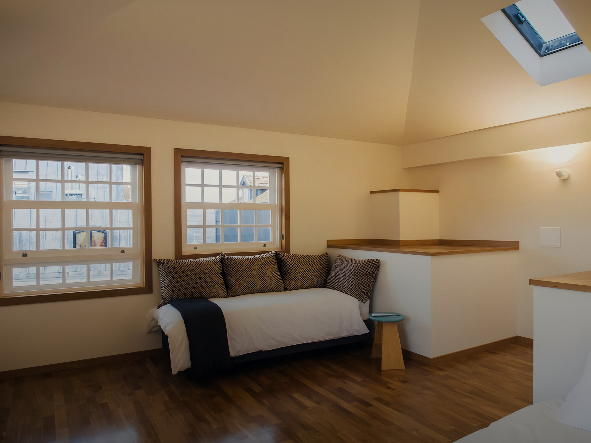
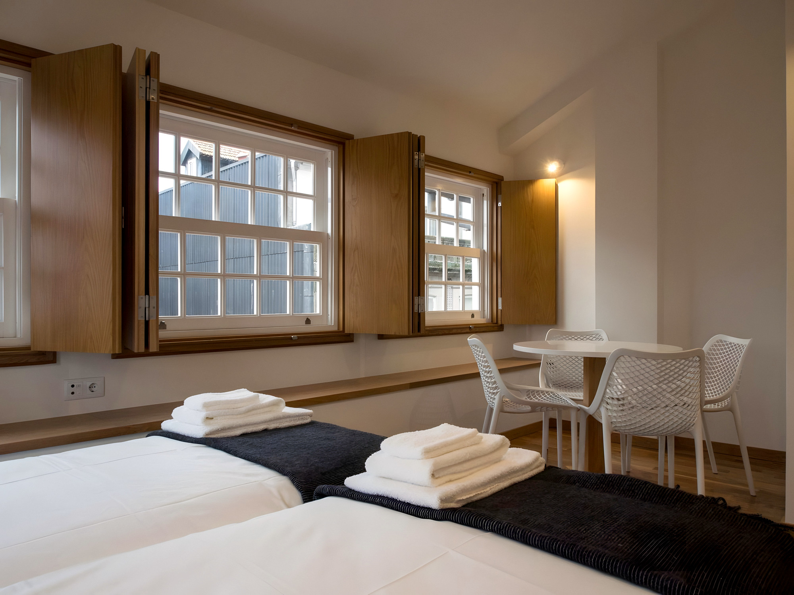
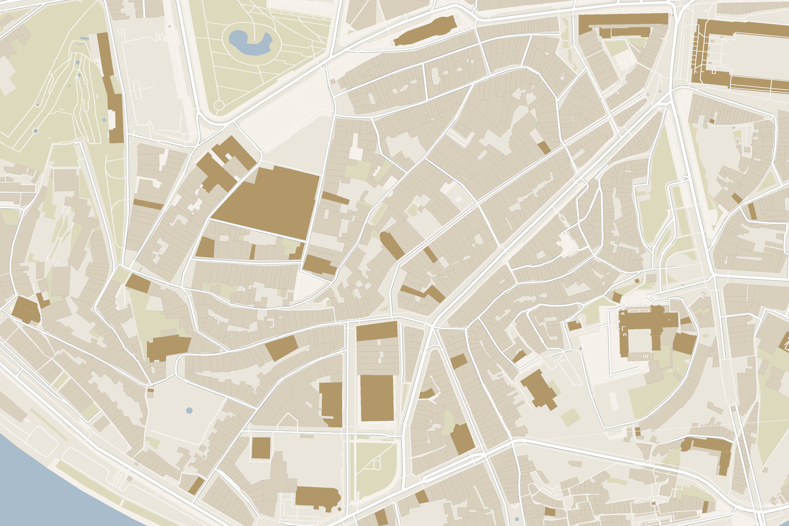
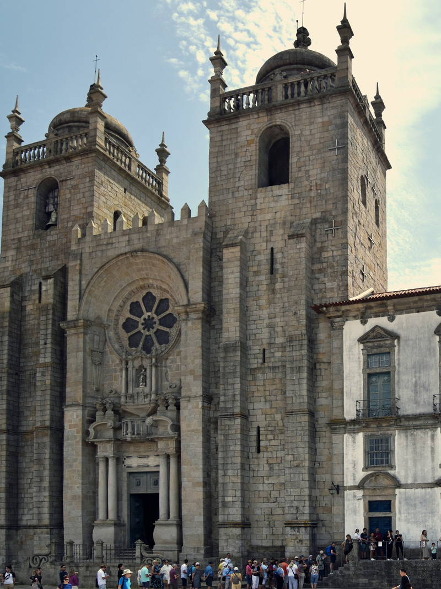
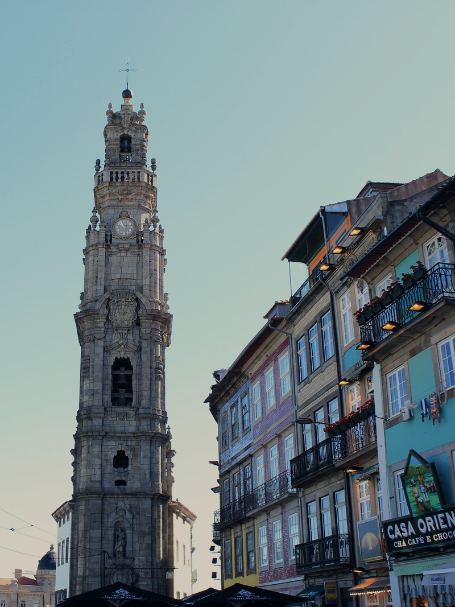

Belomont6
Dúplex
Piso de entradaO quarto e a mesa, entre portadas de madeira.
A vistaA Sé e os telhados do centro histórico.
O último andar
Um dúplex de 80 m² no último andar, o 5.º, de um edifício de 1860 recuperado em 2016, com elevador. Dorme cinco pessoas, entre os dois pisos, com vista para o casario e para a Sé.
- 80m²
- 5pessoas
- 2pisos
- 1casa de banho
Por dentro
O quarto
Portadas de madeira e a Sé na janela da cabeceira.
O piso de cima
Três camas, janelas sobre os telhados e clarabóia.
A cozinha
Placa, micro-ondas, torradeira e chaleira.
A casa de banho
Com duche e secador de cabelo.
Comodidades
Vista para a Sé
E para os telhados do centro histórico.
Wi-Fi gratuito
Em todo o apartamento.
Cozinha
Com placa, frigorífico e micro-ondas.
Mesa de jantar
No piso de entrada.
Televisão
Com canais por cabo.
Aquecimento
E ventoinha.
Roupa de cama e toalhas
Incluídas.
Elevador
No edifício.
Localização
No centro histórico, entre a Rua das Flores e a Ribeira.

Rua de Mouzinho da SilveiraTúnel da RibeiraAvenida Dom Afonso HenriquesCampo dos Mártires da PátriaRua dos ClérigosRua das FloresRua de Trás Palácio da BolsaSé do PortoMSão BentoPalacete de BelomonteHard ClubPalácio de São João NovoIgreja dos Terceiros FranciscanosAntiga Cadeia e Tribunal da Relação do Porto Dúplex, Belomont6 200 mRua de Belomonte, 6, 5.º4050-097 Porto
Como chegar 5min
5minRibeira
O cais e as esplanadas

6minSé do Porto
O terreiro e o claustro

7minTorre dos Clérigos
A vista sobre a cidade
 8min
8minEstação de São Bento
O átrio de azulejos
 11min
11minPonte Luís I
A travessia para Gaia
- Check-in
- 15:00 – 23:30
- Check-out
- até às 11:00
- Hora de chegada
- avisar com antecedência
- Acesso
- elevador e escada interior
- Fumar
- não
- Animais
- não são admitidos


Dúplex, Belomont6 14 fotografias